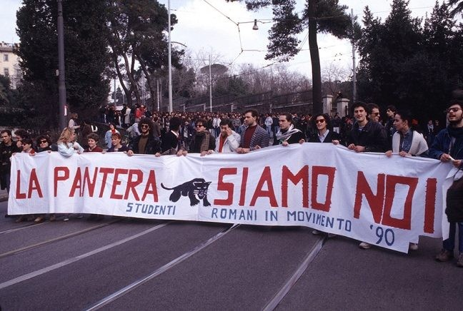

Le fonti della Pantera, messe in rete
Tra il dicembre 1989 e la primavera 1990 il movimento della Pantera occupò le università italiane contro il progetto di riforma Ruberti sull'autonomia degli atenei.
Le sue tracce sono oggi disperse in archivi che non dialogano tra loro: fotografie d'agenzia, volantini e disegni degli archivi di movimento, cronache dei quotidiani. Rete Pantera le riunisce in un'unica collezione, descrive ogni documento con standard condivisi (Dublin Core, ICCD, TEI) e lo collega a persone, luoghi ed eventi riconciliati con authority esterne.
Leggi l'introduzione pagina in preparazioneEsplora il catalogo
Fotografie, volantini, disegni e articoli in un'unica raccolta.
Vai al catalogooppure esplora per
Mappa
Dove sono conservate le fonti: la distribuzione geografica degli archivi, dei fondi e delle istituzioni che custodiscono i documenti sulla Pantera.
Apri la mappaSullo sfondo: Bologna, 6 dicembre 1989, corteo «900 idee contro il IX centenario». Archivio Storico della Nuova Sinistra «Marco Pezzi».